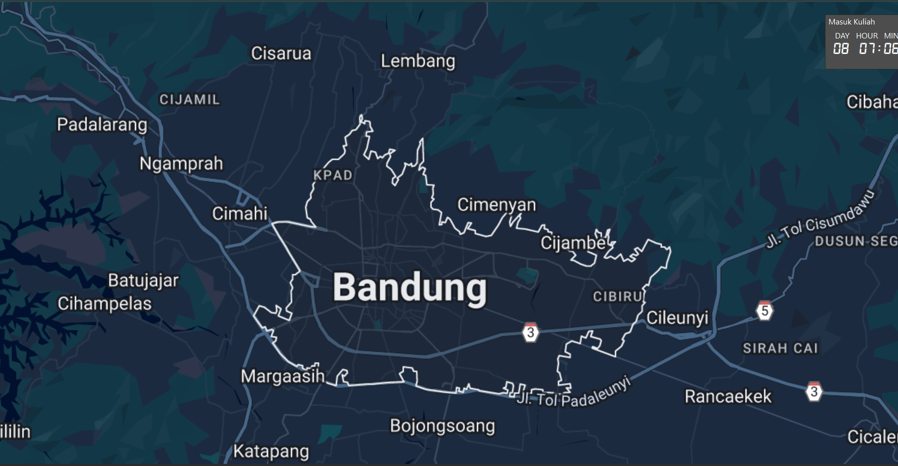
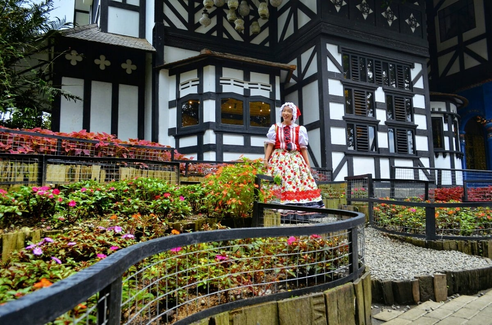
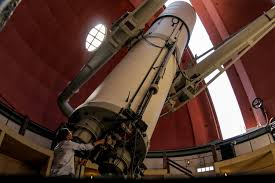

Kata Bandung berasal dari kata bendung atau bendungan karena terbendungnya sungai Citarum oleh
lava Gunung Tangkuban Parahu yang lalu membentuk telaga. Legenda yang diceritakan oleh
orang-orang tua di Bandung mengatakan bahwa nama Bandung diambil dari sebuah kendaraan air
yang terdiri dari dua perahu yang diikat berdampingan yang disebut perahu bandung yang
digunakan oleh Bupati Bandung, R.A. Wiranatakusumah II, untuk melayari Ci Tarum dalam mencari
tempat kedudukan kabupaten yang baru untuk menggantikan ibu kota yang lama di Dayeuhkolot.
Berdasarkan filosofi Sunda, kata Bandung juga berasal dari kalimat Nga-Bandung-an Banda
Indung, yang merupakan kalimat sakral dan luhur karena mengandung nilai ajaran Sunda.
Nga-Bandung-an artinya menyaksikan atau bersaksi. Banda adalah segala sesuatu yang berada di
alam hidup yaitu di bumi dan atmosfer, baik makhluk hidup maupun benda mati. Sinonim dari
banda adalah harta. Indung berarti Ibu atau Bumi, disebut juga sebagai Ibu Pertiwi tempat
Banda berada.
why is coffe?

Kota Bandung dikelilingi oleh pegunungan, sehingga bentuk morfologi wilayahnya bagaikan sebuah mangkok
raksasa,
secara geografis kota ini terletak di tengah-tengah provinsi Jawa Barat, serta berada pada ketinggian ±768 m
di
atas permukaan laut, dengan titik tertinggi di berada di sebelah utara dengan ketinggian 1.050 meter di atas
permukaan laut dan sebelah selatan merupakan kawasan rendah dengan ketinggian 675 meter di atas permukaan
laut.
Kota Bandung dialiri dua sungai utama, yaitu Sungai Cikapundung dan Sungai Citarum beserta anak-anak
sungainya
yang pada umumnya mengalir ke arah selatan dan bertemu di Sungai Citarum. Dengan kondisi yang demikian,
Bandung
selatan sangat rentan terhadap masalah banjir terutama pada musim hujan.
How Cofee is Made?
Sejak dibukanya Jalan Tol Cipularang, kota Bandung telah menjadi tujuan utama dalam menikmati liburan akhir
pekan terutama dari masyarakat yang berasal dari Jakarta sekitarnya. Selain menjadi kota wisata belanja,
kota
Bandung juga dikenal dengan sejumlah besar bangunan lama berarsitektur peninggalan Belanda.
Farm House Lembang

Berada di jalur utama Bandung-Lembang, Farm House menjadi objek wisata yang tidak pernah
sepi pengunjung. Selain karena letaknya strategis, kawasan ini juga menghadirkan nuansa
wisata khas Eropa. Semua itu diterapkan dalam bentuk spot swafoto Instagramable.
Observatorium Bosscha

Memiliki beberapa teleskop, antara lain, Refraktor Ganda Zeiss, Schmidt Bimasakti, Refraktor
Bamberg, Cassegrain GOTO, dan Teleskop Surya. Refraktor Ganda Zeiss adalah jenis teleskop
terbesar untuk meneropong bintang. Benda ini diletakkan pada atap kubah sehingga saat
teropong digunakan, atap tersebut harus dibuka. Observatorium Bosscha boleh dikunjungi oleh
siapapun, tanpa tiket. Namun, bagi yang ingin menggunakan teleskop Zeiss, wajib mendaftarkan
diri. Untuk instansi atau lembaga pendidikan, diberikan jadwal hari Selasa sampai Jumat.
Sementara itu, kunjungan individu dibuka setiap hari Sabtu.